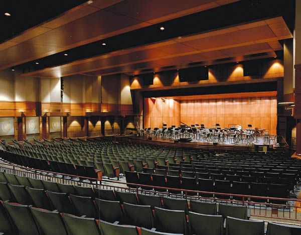

Reservation of conference hall is administered by the Maintenance Division of the Highgate School. ( Hiring hours: 9.00 am to 6.30 pm )
- Full payment should be made to reserve the auditorium and conference room
- Liquor and smoking not allowed within the building premises
- Use of cool drinks, tea and food is not allowed within the auditorium. Use of these items is allowed outside the auditorium with prior permission.
- After reservation of the auditorium, a copy of the programme should handed over to the Board on the previous day of the programme.
- The organizers should ensure that the participants do not disturb the activities of the National Library
- Those who reserve the auditorium should not make any damage to the equipment and other items.
- If any distinguished of special guests participate the programme, the organizers are responsible for their security arrangements..
- If any equipment or any other items brought into the auditorium from outside the National Library and Documentation Services Board, prior approval should be taken to bring these items.
- If those who reserve the auditorium want to use any audio visual equipment they should apply them in advance. These equipment should be inspected and received before the relevant technical officer at the end of the programme.
The proper functioning of the equipment should certified and handed them over.
- National Library and Documentation Services Board has the right to use its officer or several officers to see or inspect the activities in the auditorium when necessary.
- At least one copy of the books, publications distributed/ sold to the participants of the programme by those who reserve the auditorium should be handed over to the officer in charge of the auditorium when necessary before the programme.
- Reservation of the auditorium is not normally cancelled. However, the Director General of the National Library and Documentation Services Board has the power to cancel the reservation after short notice in case of a submission of false information by those who reserved the auditorium or due to any other unavoidable circumstances.
- If the reservation of the auditorium is cancelled on the requirement of the applicant, it should be informed in writing to the Director General of the Board before 7 working days. In such occasions, 25% of the deposit is retained and the balance is refunded to the applicant.
Auditorium
The Highgate school Auditorium is the ideal venue for the medium scale events with seating arrangements available in theatre, classroom or forum styles. this fully air conditioned venue can also accommodate customized plans as per your requirements
The building spreads over 14,000 square metres of floor area.
The theatre is equipped with ultra modern facilities such as an auditorium with 1,288 seats, a library, and training facilities.
The building features two permanent theatres—the main auditorium and an open-air theatre—and the ability to convert the front steps into an additional open-air theatre.
The 690-square-metre moving stage in the auditorium includes the ability to raise and lower the orchestra pit to and from stage level. There are facilities to conduct educational and research activities. Parking for 500 vehicles, is also available
